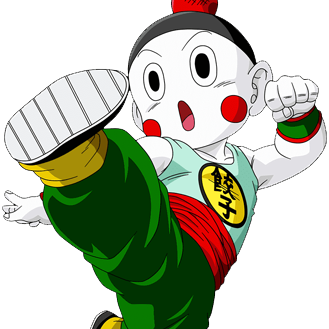

-
Goku
HP 70000
Descrição
Alegre, corajoso, e também um pouco ingênuo, Goku é um Saiyajin originalmente enviado à Terra quando criança com a missão de destruí-la. Porém, um acidente altera sua memória, fazendo-o crescer com um coração puro e depois se torna o maior defensor da Terra, e também o líder informal dos Guerreiros Z.
-
Kuririn
HP 40000
Descrição
Kuririn é um protagonista em Dragon Ball, teve uma breve rivalidade com Goku quando se conheceram e treinaram com Mestre Kame, mas eles logo viraram melhores amigos. Ele é um Guerreiro Z prominente, embora seja sempre dominado pelos inimigos. Sua baixa estatura e carequice ajudam a criar alívio cômico durante momentos tensos. Durante a metade final de Dragon Ball Z, ele se aposenta das lutas, optando a estabelecer-se com sua família, sendo o esposo de Androide 18 e pai de Marron.
-
Piccolo
HP 80000
Descrição
Piccolo é a reencarnação Namekuseijin e filho final de Piccolo Daimaoh. Um sábio e inteligente estrategista que era originalmente um inimigo de Goku, Piccolo vira um membro permanente dos Guerreiros Z, especialmente após ele formar um laço próximo com o filho de Goku, Gohan, quando estavam treinando em preparação para a chegada de Nappa e Vegeta.
-
Vegeta
HP 200000
Descrição
Príncipe Vegeta é o príncipe da raça Saiyajin e arqui-rival de Goku. Ele é o filho mais velho de Vegeta III.Vegeta foi antes um cruel guerreiro e mercenário, mas depois abandona seu papel no Exército Galáctico de Freeza, mas opta a ficar e morar na Terra, lutando junto aos Guerreiros Z; enquanto tenta ser o melhor guerreiro do universo, especificamente com a missão de derrotar e ultrapassar Goku em poder.
-
Gohan
HP 300000
Descrição
Diferente de seu pai, Gohan não tem paixão por lutas e prefere fazê-lo apenas quando precisa defender seus amigos. Porém, Gohan luta com os Guerreiros Z para defesa da Terra durante grande parte da sua vida.
-
Tenshinhan
HP 50000

Descrição
Tenshinhan é um poderoso guerreiro, um mestre de artes marciais, e um dos mais poderosos terráqueos. Por causa de sua educação dura, Tenshinhan é inicialmente frio e sem coração, pensando em nada além de explorar inocentes e infligir dor. Ele batalha junto com outros Guerreiros Z quando ameaças aparecem na Terra, e corajosamente engajando com inimigos bem mais poderosos que ele. Porém, ele passa a maior parte de seu tempo treinando com seu melhor amigo, Chaos.
-
Yamcha
HP 20000
Descrição
Um antigo bandido do deserto, Yamcha já foi um inimigo de Goku, mas logo muda de lado e se torna um bom amigo e aliado. Bravo, orgulhoso e seguro, Yamcha é um lutador de artes marciais talentoso e um dos Terráqueos mais fortes da Terra, possuindo habilidades e traços que permitem-o lutar junto com seus companheiros Guerreiros Z quando ameaças grandes se levantam. Porém, na segunda metade de Dragon Ball Z, ele é ultrapassado por seus aliados e inimigos, e então se aposenta das lutas.
-
Trunks
HP 150000
Descrição
Educado, sério e cuidadoso, Trunks do Futuro vem de um futuro alternativo na qual Androide 17 e Androide 18 mataram todos os Guerreiros Z e criaram um mundo apocalíptico na Terra. Trunks do Futuro foi treinado por Gohan do Futuro, e vira um bom guerreiro e Super Saiyajin; traços que o ajudam na batalha contra os Androides após voltar no tempo para salvar seu próprio futuro.
-
Chaos
HP 10000
Descrição
Chaos era um aluno de Mestre Tsuru, assim como Tenshinhan, e ele é especialista em poderes como telepatia e telecinese. Quando ele era um aluno da Escola Garça, ele formou uma rivalidade com o aluno da Escola Tartaruga Kuririn por um tempo durante o 22º Torneio de Artes Marciais. Junto com Tenshinhan, ele logo muda de lado após ver a loucura nos ensinamentos de seu mestre, e se torna um aliado confiável e um Guerreiro Z.
-
Freeza
HP 1000000
Descrição
Freeza é um Imperador Galáctico que dirige o Exército Galáctico de Freeza, temido por sua crueldade e poder. Freeza cria vários exércitos dos planetas que ele conquista, mas sua raça mais utilizada eram os Saiyajins. Freeza ouviu sobre a lenda do Super Saiyajin, um ser com poder sem igual e o único guerreiro que seria uma ameaça a ele, mas o rejeita como mitologia; porém, após vários Saiyajins emergirem com potencial grande, Freeza temeu que a lenda do Super Saiyajin fosse realmente acontecer. Então, quando confrontado por Bardock, um Saiyajin cujos poderes estavam aumentando, Freeza destruiu toda a raça Saiyajin aniquilando o Planeta Vegeta, lar da raça Saiyajin.